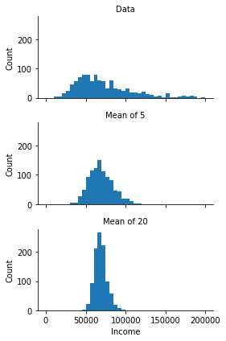
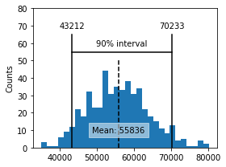
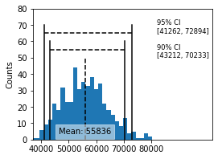
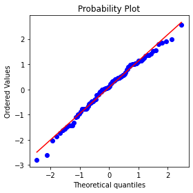
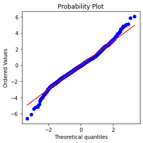

%matplotlib inline
from pathlib import Path
import pandas as pd
import numpy as np
from scipy import stats
from sklearn.utils import resample
import seaborn as sns
import matplotlib.pylab as pltChapter 2 - Data and Sampling Distributions
Practical Statistics for Data Scientists (Python)
- 2019 Peter C. Bruce, Andrew Bruce, Peter Gedeck
Import required Python packages.
try:
import common
DATA = common.dataDirectory()
except ImportError:
DATA = Path().resolve() / 'data'Define paths to data sets. If you don’t keep your data in the same directory as the code, adapt the path names.
LOANS_INCOME_CSV = DATA / 'loans_income.csv'
SP500_DATA_CSV = DATA / 'sp500_data.csv.gz'Figure 2.1
np.random.seed(seed=1)
x = np.linspace(-3, 3, 300)
xsample = stats.norm.rvs(size=1000)
fig, axes = plt.subplots(ncols=2, figsize=(5, 1.5))
ax = axes[0]
ax.fill(x, stats.norm.pdf(x))
ax.set_axis_off()
ax.set_xlim(-3, 3)
ax = axes[1]
ax.hist(xsample, bins=30)
ax.set_axis_off()
ax.set_xlim(-3, 3)
ax.set_position
# plt.subplots_adjust(left=0, bottom=0, right=1, top=1, wspace=0, hspace=0)
plt.show()
Sampling Distribution of a Statistic
loans_income = pd.read_csv(LOANS_INCOME_CSV).squeeze('columns')
sample_data = pd.DataFrame({
'income': loans_income.sample(1000),
'type': 'Data',
})
sample_mean_05 = pd.DataFrame({
'income': [loans_income.sample(5).mean() for _ in range(1000)],
'type': 'Mean of 5',
})
sample_mean_20 = pd.DataFrame({
'income': [loans_income.sample(20).mean() for _ in range(1000)],
'type': 'Mean of 20',
})
results = pd.concat([sample_data, sample_mean_05, sample_mean_20])
print(results.head()) income type
40292 63000.0 Data
38959 92000.0 Data
17361 134000.0 Data
33996 52000.0 Data
26491 43000.0 Datag = sns.FacetGrid(results, col='type', col_wrap=1,
height=2, aspect=2)
g.map(plt.hist, 'income', range=[0, 200000], bins=40)
g.set_axis_labels('Income', 'Count')
g.set_titles('{col_name}')
plt.tight_layout()
plt.show()
The Bootstrap
results = []
for nrepeat in range(1000):
sample = resample(loans_income)
results.append(sample.median())
results = pd.Series(results)
print('Bootstrap Statistics:')
print(f'original: {loans_income.median()}')
print(f'bias: {results.mean() - loans_income.median()}')
print(f'std. error: {results.std()}')Bootstrap Statistics:
original: 62000.0
bias: -82.09799999999814
std. error: 228.73933106830927Confidence Intervals
print(loans_income.mean())
np.random.seed(seed=3)
# create a sample of 20 loan income data
sample20 = resample(loans_income, n_samples=20, replace=False)
print(sample20.mean())
results = []
for nrepeat in range(500):
sample = resample(sample20)
results.append(sample.mean())
results = pd.Series(results)
confidence_interval = list(results.quantile([0.05, 0.95]))
ax = results.plot.hist(bins=30, figsize=(4, 3))
ax.plot(confidence_interval, [55, 55], color='black')
for x in confidence_interval:
ax.plot([x, x], [0, 65], color='black')
ax.text(x, 70, f'{x:.0f}',
horizontalalignment='center', verticalalignment='center')
ax.text(sum(confidence_interval) / 2, 60, '90% interval',
horizontalalignment='center', verticalalignment='center')
meanIncome = results.mean()
ax.plot([meanIncome, meanIncome], [0, 50], color='black', linestyle='--')
ax.text(meanIncome, 10, f'Mean: {meanIncome:.0f}',
bbox=dict(facecolor='white', edgecolor='white', alpha=0.5),
horizontalalignment='center', verticalalignment='center')
ax.set_ylim(0, 80)
ax.set_ylabel('Counts')
plt.tight_layout()
plt.show()68760.51844
55734.1
np.random.seed(seed=3)
# create a sample of 20 loan income data
sample20 = resample(loans_income, n_samples=20, replace=False)
results = []
for nrepeat in range(500):
sample = resample(sample20)
results.append(sample.mean())
results = pd.Series(results)
confidence_interval = list(results.quantile([0.05, 0.95]))
ax = results.plot.hist(bins=30, figsize=(4, 3), color='C1')
ax.plot(confidence_interval, [55, 55], color='black', linestyle='--')
for x in confidence_interval:
ax.plot([x, x], [0, 60], color='black')
ax.text(82000, 50,
f'90% CI\n[{confidence_interval[0]:.0f}, {confidence_interval[1]:.0f}]',
fontsize='small')
confidence_interval = list(results.quantile([0.025, 0.975]))
ax = results.plot.hist(bins=30, figsize=(4, 3))
ax.plot(confidence_interval, [65, 65], color='black', linestyle='--')
for x in confidence_interval:
ax.plot([x, x], [0, 70], color='black')
ax.text(82000, 65,
f'95% CI\n[{confidence_interval[0]:.0f}, {confidence_interval[1]:.0f}]',
fontsize='small')
# ax.text(sum(confidence_interval) / 2, 264, '95 % interval',
# horizontalalignment='center', verticalalignment='center')
meanIncome = results.mean()
ax.plot([meanIncome, meanIncome], [0, 50], color='black', linestyle='--')
ax.text(meanIncome, 5, f'Mean: {meanIncome:.0f}',
bbox=dict(facecolor='white', edgecolor='white', alpha=0.5),
horizontalalignment='center', verticalalignment='center')
ax.set_ylim(0, 80)
ax.set_xlim(37000, 102000)
ax.set_xticks([40000, 50000, 60000, 70000, 80000])
ax.set_ylabel('Counts')
# plt.tight_layout()
# plt.show()Text(0, 0.5, 'Counts')
Normal Distribution
Standard Normal and QQ-Plots
The package scipy has the function (scipy.stats.probplot) to create QQ-plots. The argument dist specifies the distribution, which is set by default to the normal distribution.
fig, ax = plt.subplots(figsize=(4, 4))
norm_sample = stats.norm.rvs(size=100)
stats.probplot(norm_sample, plot=ax)
plt.tight_layout()
plt.show()
Long-Tailed Distributions
sp500_px = pd.read_csv(SP500_DATA_CSV)
nflx = sp500_px.NFLX
nflx = np.diff(np.log(nflx[nflx>0]))
fig, ax = plt.subplots(figsize=(4, 4))
stats.probplot(nflx, plot=ax)
plt.tight_layout()
plt.show()
Binomial Distribution
print(stats.binom.pmf(2, n=5, p=0.1))0.07289999999999992print(stats.binom.cdf(2, n=5, p=0.1))0.99144